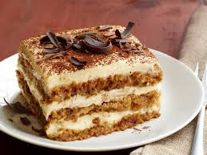
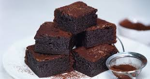
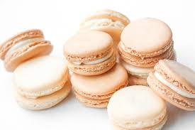

| Dessert |
Ingredient |
preparation |
|  |
- A cup (8floz/225ml) heavy whipping cream
- 1 cup (8oz/225g) mascarpone cheese, room temperature (see substitute idea below)
- 1/3 cup (2 1/2 oz/71g) sugar
- 1 teaspoon vanilla extract
- 1 tablespoon Amaretto liquor or Brandy (optional but yummy!)
- 2 cups (16oz/450ml) espresso or STRONG coffee at room temperature
- 1 pack Ladyfingers (Boudoir biscuits/Savoiardi. Look for eggless if needed)
- Cocoa powder for dusting the top
|
- Beat whipping cream, sugar, and vanilla until soft peaks form.
- Add in mascarpone cheese and amaretto (if using) and continue to whip to stiff peaks.
- Dip ladyfingers in coffee (and brandy if using) and place in an 8×8 pan to make the
first layer – you can fit about 7 cookies in each layer. Don't let them soak as the will fall apart,
just a quick dunk in the coffee is enough.
- Spread half of the whipped cream mixture on top of the first layer of ladyfingers. Repeat process
with the second layer of ladyfingers and cream mixture.
- Dust the top of dessert with cocoa powder using a sieve. Refrigerate for about 2-4 hours
(it gets even better in the fridge and is a perfect make-ahead dessert). |
|  |
- 1/2 cup + 2 tablespoons salted butter melted
- 1 cup granulated sugar
- 2 large eggs
- 2 teaspoons vanilla extract
- 1/2 cup melted milk chocolate chips
- 3/4 cup all-purpose flour
- 1/4 cup unsweetened cocoa powder
- 1/2 teaspoon salt
- 1 cup milk chocolate chips
|
- Preheat oven to 350 degrees F. Line a metal 9x9 pan with parchment paper.
- Pour melted butter into a large mixing bowl. Whisk in sugar by hand until smooth, 30 seconds.
- Add in eggs and vanilla extract. Whisk 1 minute.
- Whisk in melted chocolate until combined and smooth.
- Use a rubber spatula to stir in flour, cocoa powder, and salt until just combined.
Stir in whole chocolate chips.
- Pour into prepared pan and smooth out.
- Bake in the preheated oven for 30 minutes. Let cool in pan 30 minutes before slicing.
|
|  |
- For macaron shells:
- 100gr almond flour
- 100gr powdered sugar
- 70gr (1/3 cup) egg whites, at room temperature
- 1/4 teaspoon cream of tartar, optional
- 1/4 teaspoon salt
- 1/4 cup (50gr) sugar
- Gel food coloring, if desired
- For Buttercream Filling:
- 2 large egg yolks
- 1/4 cup (50gr) sugar
- 3 1/2 tablespoons milk
- 1/2 cup (115gr) unsalted butter, softened
- 1 teaspoon pure vanilla extract
|
- Gather ingredients.
- Preheat the oven to 300 F/140 C. If your oven happens to have a fan in it,
we recommend not to use it if possible. But do not worry if you have no alternative,
the results will still be good!
- Sieve the icing sugar and ground almonds into a large mixing bowl.
Throw any lumps left behind away. Mix the two together.
- In a separate, scrupulously clean bowl whisk the egg whites and
salt until they form soft peaks.Add the caster sugar, a little at a
time and continue to whisk until the whites are very thick and glossy
- Gently stir in the icing sugar and almond mix. The mixture will lose some air
and become quite loose, don't worry, this is the way it should be.
- Using a piping bag with a 1/3-inch (1 cm) nozzle, fill with the macaron mixture.
- Place the silicon mat (see note in the introduction) or paper template onto a baking sheet.
Pipe small blobs onto the sheet remembering that less is more at this stage because the
mixture will settle and form into the allotted spaces.
- Gently tap the baking sheet a few times on the work surface to help the macaron mixture to
settle and to break any air bubbles, then leave to dry for 20 minutes—the surface of
the macaron will become smooth and shiny
- Bake the macarons in the preheated oven for 7 to 8 minutes, open the door to release any steam,
close the oven door and cook for a further 7 to 8 minutes.
- Slide the mat or greaseproof paper onto a wire cooling rack and leave to cool thoroughly.
Do not be tempted to remove the macarons from the mat until they are cold or you will break them.
|